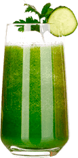
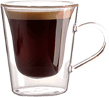
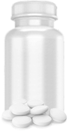
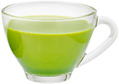
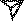

Keto Light
Per coloro che non sono abituati a contare le calorie
-
assunzione di carboidrati diminuisce
-
I chetoni si trasformano in energia per il cervello
-
Il livello di glucosio nel sangue diminuisce
-
Il grasso si trasforma in chetoni
-
Il corpo inizia a bruciare i grassi
Come funziona?
Keto Light contiene solo ingredienti naturali che portano il corpo in uno stato costante di chetosi. La chetosi è un processo naturale che consente all'organismo di lavorare in modo produttivo in condizioni di scarsa assunzione di cibo.
Mettendo il tuo corpo in uno stato di chetosi, si avvia un processo di intensa combustione dei grassi.
Clinicamente dimostrato
che Keto Light
- aumenta il tasso metabolico del 70%
- arresta la produzione di glucosio e cellule adipose del 150%
- aiuta il corpo a bruciare i grassi e convertirlo in energia
- ferma il processo di formazione di pieghe e cellulite
- iduce i livelli di ormone dello stress — cortisolo e migliora la salute mentale
- ripristina le funzioni del cervello e del sistema nervoso
Non puoi limitarti a cibi deliziosi
Aderendo alla dieta chetogenica e rinunciando a mangiare carboidrati - aumenterai l'effetto del Keto Light. Il vantaggio di una dieta cheto è la possibilità di consumare quotidianamente molti cibi deliziosi come carne, pesce, uova, formaggio e tutto ciò che contiene molti grassi.
Dieta Cheto
Tempo di perdita di peso: da 3 mesi a sei mesi
Limitazioni: rifiuto di carboidrati, moderata assunzione di proteine
Effetti collaterali: acidosi (mal di testa, sonnolenza, debolezza); nefrolitiasi (calcoli renali), demineralizzazione ossea, problemi gastrointestinali, ipoglicemia temporanea, disidratazione
Risultato: -5-7 kg al mese
Dieta Cheto
+ Keto Light
Tempo di perdita di peso: da 2 settimane a un mese
Limitazioni: assunzione moderata di carboidrati
Effetti collaterali: non trovati
Risultato: -14-19 kg al mese
Tuttavia, anche continuando a mangiare normalmente e prendendo Keto Light, perderai ancora peso intensamente.
Keto Light cambierà la tua idea di perdere peso
-
Il risultato senza sforzo Активные компоненты порошка действуют в течение всего дня, пока вы работаете, отдыхаете или даже спите. Они ускоряют обмен веществ и запускают процесс сжигания жира без физических упражнений.
-
Senza effetti collaterali Grazie ai suoi ingredienti naturali, Keto Light non influisce negativamente su cuore, vasi sanguigni o fegato. Anche il numero di reazioni allergiche è ridotto al minimo.
-
Senza bruciare la massa muscolare Componenti di Keto Light scompongono il grasso sottocutaneo mantenendo la massa muscolare. Impediscono la riduzione degli elettroliti nel sangue, che contribuisce una perdita di peso sana.
Cosa sceglierai?
-

Cocktail
dimagrante- Calorie: 150-230
- Zucchero: 35-40 g
- Caffeina: 25-30%
-

Caffè
per dimagrire- Calorie: 120-180
- Zucchero: 0 g
- Caffeina: 45-55%
-
KETO Light
- Calorie: 0
- Zucchero: 0 g
- Caffeina: 0 %
-

Pillole dimagranti nocive
- Calorie: 190-250
- Zucchero: 10-20 g
- Caffeina: 40-50%
-

Tè
per dimagrire- Calorie: 10-130
- Zucchero: 0 g
- Caffeina: 75-90%
Dì addio al sovrappeso!
Perdi peso 2 volte più velocemente!
Offerta esclusiva! acquista Keto Light con uno sconto del 50%. Il tempo della promozione è limitato
Le ragazze si fidano di Keto Light la sua figura e la salute
nicky99
-

- 
Mi piace: 176
Nicky99 Sto seguendo un corso di dimagrimento con Keto Light e ho già perso 8 kg in 2 settimane! Qualcun altro ha provato questo rimedio miracoloso?
24 novembre 2019
iamqueen
Mi piace: 342
iamqueen Ricordate, ho detto nella mia storis che ho iniziato a usare Keto Light? Voglio vantarmi dei miei risultati: -14 kg in un solo mese! La dieta keto ha aderito con moderazione e tali risultati! Sono molto contenta.
25 novembre 2019
violet

Mi piace: 225
Violet Oggi ho ricevuto il pacchetto tanto atteso con Keto Light. Sto ufficialmente iniziando a perdere peso :) Chi è con me?
26 novembre 2019
Domande frequenti
-
Sono possibili reazioni allergiche dopo l'assunzione di Keto Light?
Le reazioni allergiche possono essere dovute solo all'intolleranza individuale ai componenti del rimedio.
-
Osservando la dieta cheto, non puoi mangiare dolci e farinosi. E se prendi Keto Light, è possibile?
In piccole quantità è possibile. Keto Light aiuta a rimuovere i carboidrati veloci dal corpo prima che vengano assorbiti.
-
Dove si può acquistare Keto Light?
Keto Light è venduto solo qui - sul sito ufficiale del produttore. Ciò riduce al minimo il numero di falsi.
-
In quali tempi puoi perdere peso con Keto Light?
Tutto dipende dal tuo corpo e stile di vita. In media, ci vuole 1 mese.
-
Keto Light ha superato i test clinici necessari?
Keto Light è testato e approvato dai principali nutrizionisti europei. Ha ricevuto numerosi certificati di qualità ed è stato assegnato alla conferenza annuale su dietetica e immunologia.
-
Keto Light è compatibile con tutti i prodotti?
Sì, Keto Light può essere preso senza cambiare le tue abitudini alimentari.
-
Il peso rimane dopo la fine del corso Keto Light?
Sì, il peso rimane a lungo.
-
Perché Keto Light non è venduto nelle farmacie e nei negozi?
Quindi il produttore protegge il suo prodotto dalla comparsa di falsi e comunica direttamente con i suoi clienti.
-
È possibile usare Keto Light per migliorare il corpo?
Sì, Keto Light migliora il funzionamento degli organi interni, purifica il corpo e satura di vitamine. Molti già dopo aver perso peso continuano a prendere Keto Light proprio per migliorare il corpo.
-
Quanto tempo dopo l'assunzione la polvere è completamente assorbita dal corpo?
In media, una porzione di Keto Light viene assorbita entro 10 minuti.
-
Keto Light ha degli analoghi?
Al momento, Keto Light non ha analoghi. Questo è un prodotto unico a base naturale che funziona in modo sicuro e super efficace.
Smetti di dubitare! È tempo di perdere peso!
Keto Light è il modo più rapido ed efficace per perdere peso.
Ordinazione